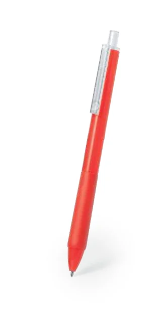
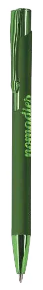
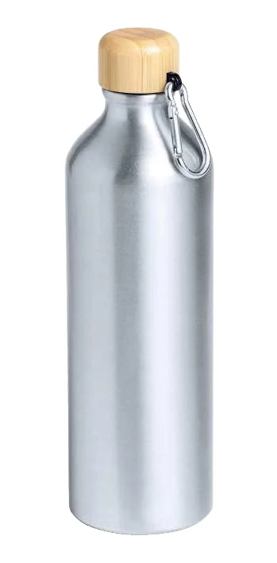
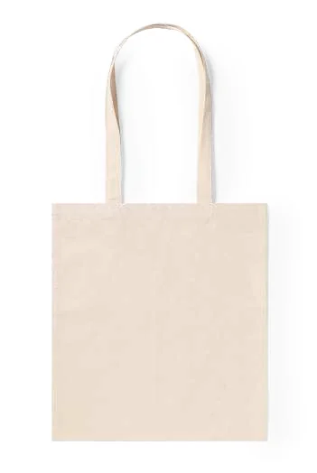
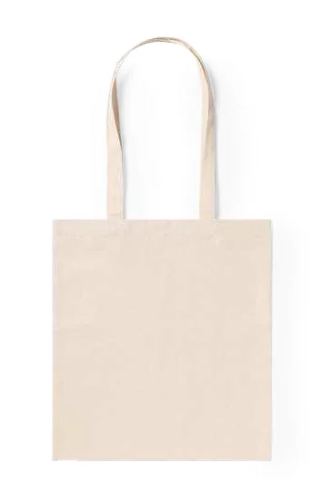

Synex 20673
- Esferográfica em ABS reciclado.
- Dimensões indicadas: Ø 1 × 14,5 cm.
Um exemplo de corpo em plástico. A identificação do ABS ajuda a preparar a avaliação, mas não confirma por si só uma tinta ou técnica.
O nome do material é o ponto de partida. O acabamento e a construção do artigo também contam.
Peça a identificação do polímero e do revestimento. ABS, PP, PVC, PET e Tritan não devem ser tratados como uma superfície única; confirme a tinta e o tratamento com quem vai produzir.

Um exemplo de corpo em plástico. A identificação do ABS ajuda a preparar a avaliação, mas não confirma por si só uma tinta ou técnica.

Tem a mesma capacidade indicada para o Chalmer, mas outro material. Não se deve transferir automaticamente a solução de personalização entre os dois.
Distinga o metal de base do acabamento visível. Uma caneta pintada e uma superfície metálica sem revestimento podem exigir decisões diferentes.

O catálogo assinala uma aplicação especial de gravação a laser para este modelo. A área, o efeito e as condições de produção continuam a precisar de confirmação para o artigo escolhido.

Compare o material, o formato e a tampa, além da capacidade. A ficha não dispensa a confirmação dos cuidados de lavagem.
Observe uma amostra real e a variação entre peças. Na escolha do desenho, pergunte como o veio e o acabamento interferem com a leitura.

Num artigo com materiais diferentes, identifique primeiro a zona onde ficará o logótipo. O corpo e a tampa não devem ser avaliados como uma única superfície.

A indicação de sublimação é específica desta referência; não prova que qualquer artigo de bambu aceite o processo. O desenho mostrado pertence à apresentação do catálogo.
Confirme a composição, a estrutura, as costuras e os revestimentos. Softshell e canvas descrevem construções têxteis, pelo que é necessário conhecer também as fibras.

Compare com o Emphy: a dimensão é igual, mas a gramagem é diferente. A gramagem não deve ser apresentada como uma carga máxima de transporte.

Uma alternativa para comparar ao toque e na construção. Confirme numa amostra o comportamento do tecido e a área a personalizar.
Identifique a composição e o acabamento antes de testar calor, pressão ou tinta. Não presuma equivalência entre pele e materiais que imitam a sua aparência.
Confirme o revestimento, a área utilizável e os cuidados previstos. Peça validação específica para lavagem e para a utilização final do artigo.
Explore os processos já documentados e reúna as perguntas necessárias para o seu artigo.